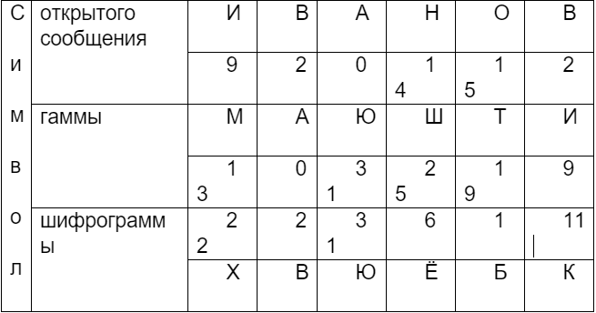

Шифры гаммирования (аддитивные шифры) являются самыми эффективными с точки зрения стойкости и скорости преобразований (процедур зашифрования и дешифрования). Для зашифрования и дешифрования используются элементарные арифметические операции – открытое/зашифрованное сообщение и гамма, представленные в числовом виде, складываются друг с другом по модулю (mod). Напомним, что результатом сложения двух целых чисел по модулю является остаток от деления (например, 5+10 mod 4 = 15 mod 4 = 3). Таблица кодирования символов
| {{ letter }} | {% endfor %}
| {{ num }} | {% endfor %}
Например, для шифрования используется русский алфавит (N = 33), открытое сообщение – «ИВАНОВ», гамма – «МАЮШТИ». При замене символов на числа буква И будет представлена как 9, В – 2 и т.д. Результат шифрования показан в следующей таблице.
Пример аддитивного шифрования по модулю N = 33
Для символа «И»: (9+13) mod 33 = 22 mod 33 = 22 – символ «Х».
Для символа «В»: (2+0) mod 33 = 2 mod 33 = 2 – символ «В».
Для символа «А»: (0+31) mod 33 = 31 mod 33 = 31 – символ «Ю».
Для символа «Н»: (14+25) mod 33 = 39 mod 33 = 6 – символ «Ё».
Для символа «O»: (15+19) mod 33 = 34 mod 33 = 1 – символ «Б».
Для символа «В»: (2+9) mod 33 = 11 mod 33 = 11 – символ «Х».
{{ error }}
{% endblock %}